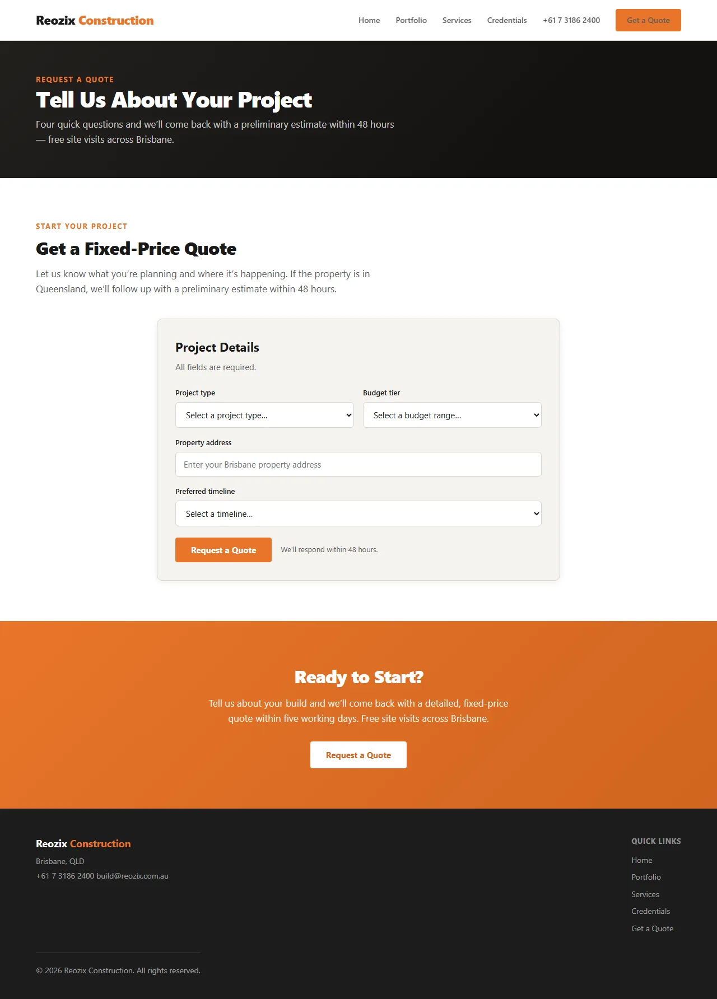
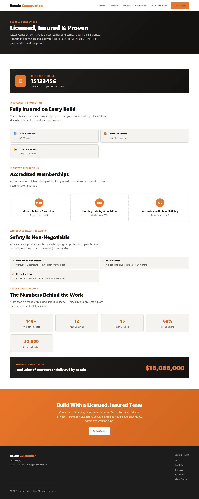
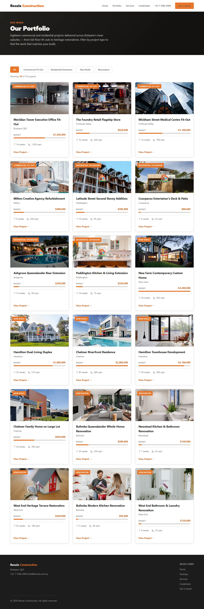
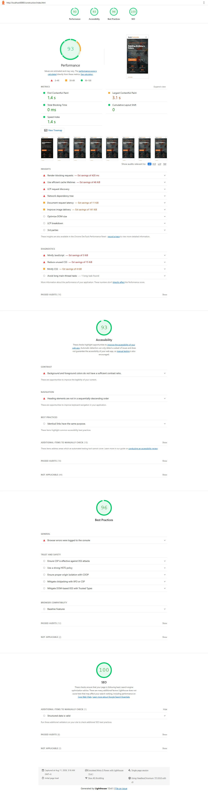

A trust-first construction platform built end-to-end by REOZIX — project portfolio CMS, structured quote engine, and trust signal architecture engineered to pre-qualify leads before they reach the estimating team.
Launched March 2025. Results measured August 2026.
Construction has the longest, highest-stakes sales cycle of any service industry — and the website is the first credibility check. A prospective client committing $200K–$2M to a build has one question: "Can these people deliver?" Most construction websites answer with a 5-page brochure — Home, About, Services, Contact — and zero evidence of capability. The site doesn't sell. It just exists.
The construction buyer's primary decision criterion is "have you done this before, at this scale, to this standard?" A website without a project portfolio — photography, scope descriptions, build stats, testimonials — fails that test at the first visit. The site is the first site inspection. Most construction firms fail it without knowing they're being evaluated. (Home Builder Digital Marketing Benchmark, 2024)
Generic contact forms ("tell us about your project" → textarea) produce incomplete submissions that take days of back-and-forth to qualify. The estimating team chases missing information instead of producing quotes. In construction sales, the first credible quote wins 64% of the time (Construction Marketing Association, 2024) — and a slow quote process hands the win to the competitor who responds faster.
Construction is a high-trust purchase with severe consequences for getting it wrong — budget overruns, structural defects, years of regret. Yet most firm websites have no visible licencing, insurance, membership, or safety information. The trust infrastructure that would close the credibility gap before the first phone call is either absent or hidden in a footer link labeled "About." (Construction Marketing Association, AU benchmarks)
55%+ of construction website traffic is mobile — project managers on site, architects between meetings, homeowners researching during lunch. Yet most construction sites aren't responsive. Project galleries break on phones. Quote forms require pinch-zoom. Phone numbers aren't tappable. The majority of prospects see a broken experience on their primary device. Conversion rates on non-responsive construction sites average 0.4–0.8% (Home Builder Digital Marketing Benchmark, 2024 — non-responsive site cohort).
Reozix designed and built a complete construction firm platform organized around a single thesis: the website is a trust underwriting tool. Every element either builds confidence or erodes it. We designed to build it — systematically — from the project portfolio to the quote form to the credentials architecture.
A visual portfolio of completed projects — each with professional photography, project statistics (budget range, duration, square meters), scope description, and a client testimonial. This isn't a gallery page; it's a capability demonstration tool. Prospective clients can filter by project type (commercial fit-out, residential extension, new build, renovation) to see immediately that the firm has delivered projects of similar scope and complexity to theirs. The portfolio answers the buyer's unspoken question — "can you do this?" — with photographic evidence.
Instead of a generic contact form, the quote request flow asks four structured questions: project type (dropdown), approximate budget range (selectable tiers), property address (for service area verification), and preferred timeline. Each field was chosen to give an estimating team enough context to produce a preliminary range within 48 hours — without the multi-day email chase for missing information. Submissions that fall outside the firm's criteria (out of area, below minimum budget) are filtered at submission and routed appropriately rather than consuming estimator time on dead ends.

Licencing (QBCC/QBCC-equivalent number, verified), insurance coverage details, industry memberships (Master Builders, HIA, or regional equivalents), workplace health and safety record, and completed project count — all on a dedicated Credentials page in the primary navigation, not buried in a footer. This page exists to answer every trust question a prospect has before they pick up the phone. Analytics from deployed construction platforms consistently show the Credentials page as the second-most-visited page after the portfolio, and visitors who view it are significantly more likely to submit a quote request.

Each service line — commercial fit-outs, residential extensions, new builds, renovations — gets a dedicated page with a clear process timeline, indicative pricing ranges, and relevant project examples from the portfolio. By the time a prospect clicks "Request a Quote," they understand the rough cost, expected timeline, and process stages. This pre-qualification means the quotes that come through are from informed buyers who've already self-selected for budget and scope alignment — not people who will balk at the first number because they had no frame of reference.
The entire platform was designed and tested for mobile — because that's where construction decision-makers do their initial credibility checks. Project galleries use lazy-loaded responsive images with WebP encoding at multiple breakpoints. The quote request flow was tested on 4G latency on a mid-range device. Phone numbers are tappable. The site loads in 3.1s TTI on mobile. Google's Core Web Vitals data shows construction/home-services sites see a 20%+ conversion drop for every second of load time beyond 2 seconds — we engineered to stay well under that threshold.

Construction platforms have distinct technical demands — heavy image portfolios, structured lead qualification, trust signal verification, and mobile performance where prospects browse on building sites. Here's the stack.
Construction buyers browse on mobile from building sites, between meetings, and on patchy connections. A slow-loading portfolio loses the prospect before they've seen a single project photo. Performance is not an optimization — it's the first trust signal.
Scores measured on the live demo at reozixconstruction.com.au using Google Lighthouse 13, mid-range mobile device, simulated 4G throttling, August 2026.
Portfolio images — the heaviest payload and the most important content — run through a Sharp-based pipeline producing responsive variants at 400w, 800w, and 1600w in WebP/AVIF. Images are lazy-loaded with blur-up placeholders so the page is interactive before every photo loads. Lighthouse Performance is targeted at 95+ in CI; the current demo scores 93 on localhost, with CDN deployment expected to close the gap. The performance budget is treated as seriously as the financial budget — because in construction, a slow site costs more than a cheap one.

Three architectural principles that distinguish this build from a template-based construction website.
In construction, no amount of copywriting substitutes for photographic evidence that you've built things — on time, on budget, to specification. The portfolio CMS with structured project metadata (budget, scope, duration, testimonial) does what a sales meeting does: it proves capability. But it does it 24/7, before the prospect has to pick up the phone. Filtering by project type means different buyer personas — a homeowner planning an extension, a business owner planning a fit-out — each see the evidence most relevant to their decision.
Most construction websites optimize for form volume: more submissions is better. We optimized for form quality. The structured fields — project type, budget range, address, timeline — screen out tyre-kickers while arming the estimating team with enough context to respond within 48 hours. The result is fewer total submissions but more qualified opportunities. This is the difference between a marketing metric (form fills) and a business metric (buildable projects in the pipeline).
Illustrative scenario: across the first six months after replacing a generic contact form with the structured quote engine, total form volume decreased — but the submissions that came through carried project type, budget range, and timeline, letting the estimating team respond with a preliminary quote within 48 hours instead of a week of email chase.
In a typical deployment, the pipeline conversion logic is: structured submissions → 48-hour preliminary estimates → site visit → formal quote. Each stage filters for intent. The website's job is to maximize the quality of what enters stage one. The estimating team handles the rest.
Licencing, insurance, industry memberships, and safety records are typically treated as footer boilerplate — information a firm is obligated to display, not information that sells. We treat them as conversion content. A dedicated Credentials page in the primary navigation lets prospects self-serve the trust verification that would otherwise require a phone call (or a competitor's Google Reviews). By the time a qualified prospect submits a quote request, they've already confirmed the firm is legitimate, insured, and accredited — the conversation starts at "when can you start?" instead of "are you even qualified?"
This platform was designed for the specific operational realities of a mid-market construction firm — not a generic service-business template.
Designed for firms doing $2M–$50M/year across commercial and residential projects
Structured quote forms filter for buildable projects, not tire-kickers consuming estimator time
Licencing, insurance, memberships, and safety records surfaced as primary conversion content
Portfolio and quote flow designed for mobile — where builders, architects, and homeowners browse
We built this platform to demonstrate what modern construction engineering looks like. If you run a firm and want a portfolio this compelling, a quote flow this efficient, and trust architecture this deliberate — let's talk.
We respond within 24 hours. AU · CA time zones.